2024年北京市房山区初中学业水平考试地理试卷 原卷解析
2024年北京市房山区初中学业水平考试
地理试卷
考生须知
1．本试卷共12页，共两部分，共24题，满分60分。考试时间60分钟。
2．在试卷和草稿纸上准确填写姓名、准考证号、考场号和座位号。
3．试题答案一律填涂或书写在答题卡上，在试卷上作答无效。
4．在答题卡上，选择题、绘图题用2B铅笔作答，其他试题用黑色字迹签字笔作答。
5．考试结束，将本试卷、答题卡和草稿纸一并交回。
第一部分单项选择题（20分）
本部分共20小题，每小题1分，共20分。在每小题列出的四个选项中，选出最符合题目要求的一项。多选、错选、漏选该小题均不得分。
二十四节气能反映季节的变化，指导农事活动，影响着人们的衣食住行。如图为二十四节气示意图。读图，完成下面小题。

1. 下列节气顺序正确的是（ ）
A. 小暑—大暑—立秋—处暑B. 夏至—春分—冬至—秋分
C. 大雪—小雪—立冬—霜降D. 立夏—立春—立冬—立秋
2. 北京地区小麦收割时间大致为6月中下旬，其对应的节气可能是（ ）
A. 小寒B. 惊蛰C. 夏至D. 大雪
3. 二十四节气变化的主要原因是（ ）
A. 地球自转B. 地球公转C. 板块运动D. 海陆变迁
【答案】1. A 2. C 3. B
【解析】
【1题详解】
二十四节气顺序是春、夏、秋、冬季节依次排列，小暑—大暑—立秋—处暑符合夏季到秋季的节气顺序，A正确；春分—夏至—秋分—冬至，B错误；霜降—立冬—小雪—大雪，C错误；立春—立夏—立秋—立冬，D错误。故选A。
【2题详解】
6月中下旬接近夏至（6月21日前后），C正确；小寒在1月，A错误；惊蛰在3月，B错误；大雪在12月，D错误。故选C。
【3题详解】
二十四节气反映季节变化，季节变化是地球公转产生的，B正确；地球自转产生昼夜交替等，A错误；板块运动、海陆变迁与节气变化无关，CD错误。故选B。
【点睛】立冬，是二十四节气之第十九个节气，也是冬季的起始。立，建始也；冬，终也，万物收藏也。立冬，意味着生气开始闭蓄，万物进入休养、收藏状态。其气候也由秋季少雨干燥向阴雨寒冻的冬季气候过渡。
2023年7月31日洪水之后，房山区镇江营村拒马河出现巨石滩。专家称目前巨石滩岩层中保留的绝大部分纹理图案都是距今约15亿年的海洋藻类生长过程中留下的痕迹。如图为巨石滩照片。读图，完成下面小题。

4.  巨石滩岩层中保留海洋藻类生长痕迹，由此推测该地区（ ）
巨石滩岩层中保留海洋藻类生长痕迹，由此推测该地区（ ）
A. 15亿年前是陆地B. 一直都是海洋
C. 15亿年前是海洋D. 一直都是陆地
5. 让巨石滩景观“重见天日”的自然灾害可能是（ ）
A. 台风B. 寒潮C. 霜冻D. 洪涝
【答案】4. C 5. D
【解析】
【4题详解】
海洋藻类是生活在海洋环境中的生物，巨石滩岩层中保留海洋藻类生长痕迹，说明在岩石形成的时候，该地区有海洋环境，海洋藻类在其中生长并留下了痕迹，推测该地区15亿年前是海洋，C正确，ABD错误；故选C。
【5题详解】
由材料可知洪水之后，房山区镇江营村拒马河出现巨石滩，推测出可能是受洪涝的影响，D正确；台风是一种热带气旋，而房山区位于北京，受台风影响较小，A错误；寒潮主要影响的是气温和天气状况，B错误；七月份不会出现霜冻现象，C错误；故选D。
【点睛】我国是世界上自然灾害发生最为频繁的国家之一。同一时间，往往有很多地区发生自然灾害。例如，春夏季节我国黄河中下游地区常见旱灾，江淮等地则多发洪涝灾害；同一地区，不仅会出现多种自然灾害，而且不同的自然灾害有时还会连续发生。例如，2011年自春至夏，江西一些地区先是旱灾，紧接着就是洪涝灾害；同一灾害如干旱、洪灾等，在大多数地区经常发生。
某地理小组在地理课上学习到全球变暖导致海平面上升的问题，并就此展开进一步探究。如图为世界年平均气温分布及因海平面上升而受到威胁的海岸分布图。读图，完成下面小题。

6. 读图发现，因海平面上升而受到威胁的海岸（ ）
A. 仅分布在年平均气温在20℃以上的沿海地区B. 仅分布在年平均气温在0℃以下的沿海地区
C. 分布在四大洋沿岸地区D. 分布在七大洲沿海地区
7. 海平面上升会导致（ ）
A. 能源枯竭B. 噪声污染C. 大气污染D. 淹没沿海低地
【答案】6. C 7. D
【解析】
【6题详解】
从图中看，因海平面上升受威胁的海岸在大西洋、太平洋、印度洋等沿岸都有分布，不是仅在特定气温区域，AB错误；分布在四大洋沿岸地区，C正确；分布在六个大洲沿海地区，南极洲没有分布，D错误。故选C。
【7题详解】
海平面上升会淹没沿海低地，D正确；能源枯竭、噪声污染、大气污染与海平面上升无关，ABC错误。故选D。
【点睛】世界气温的分布规律是：从低纬度向高纬度逐渐降低，同纬度的海洋和陆地气温也不一样，地势越高，气温越低。
2023年10月12日，溯中华文明之源的纪录片《何以文明》在英国伦敦进行巡展，深受当地人们的喜爱。下图为世界气候类型分布图及伦敦、北京的气温曲线和降水量柱状图。读图，完成下面小题。
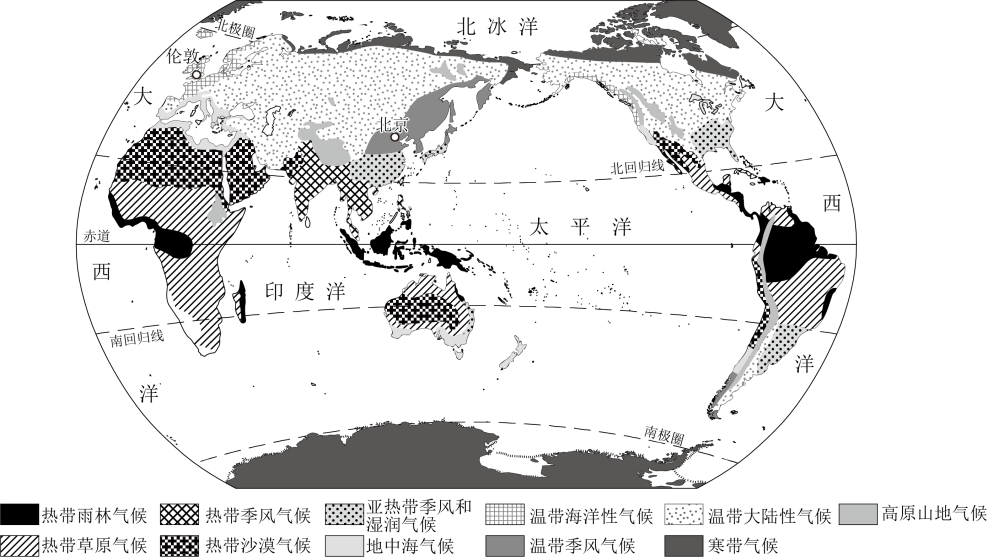
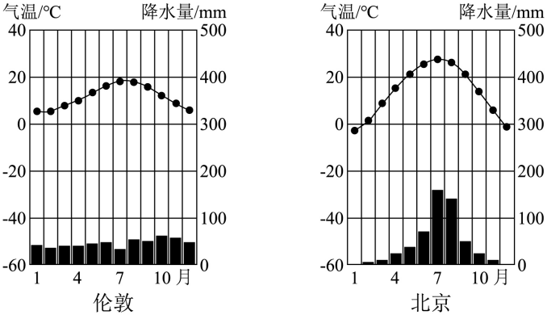
8. 布展人员到达伦敦后发现该地与北京的气候差异显著，伦敦与北京主要气候类型分别为（ ）
A. 热带沙漠气候和热带季风气候B. 热带季风气候和温带大陆性气候
C. 热带雨林气候和温带季风气候D. 温带海洋性气候和温带季风气候
9. 两地气候特征说法正确的是（ ）
A. 北京全年高温多雨B. 伦敦全年温和湿润
C. 巡展期间北京进入雨季D. 巡展期间伦敦气温最高
10. 布展人员准备衣物时，除关注伦敦气候外还需要关注当地（ ）
A 土壤B. 天气C. 动物D. 植被
土壤B. 天气C. 动物D. 植被
【答案】8. D 9. B 10. B
【解析】
 8题详解】
8题详解】
根据伦敦和北京的气温曲线及降水量柱状图可知，伦敦全年温和湿润，属于温带海洋性气候；北京夏季高温多雨，冬季寒冷干燥，属于温带季风气候，D正确，ABC错误。故选D。
【9题详解】
根据伦敦和北京的气温曲线及降水量柱状图可知，伦敦属于温带海洋性气候，全年温和湿润；北京属于温带季风气候，夏季高温多雨，冬季寒冷干燥，A错误，B正确；巡展期间为10月份，根据北京的降水量柱状图可知，北京的雨季在夏季，10月是北京的秋季，降水较少，C错误；根据伦敦的气温曲线可知，伦敦气温最高的月份出现在7月份，D错误。故选B。
【10题详解】
气候是一个地区多年的大气平均状况，一般变化不大；而天气是一个地区短时间内的大气状况，它是时刻在变化着的，因此布展人员准备衣物时，除关注伦敦气候外，还要关注当地天气，B正确；准备衣物与天气有关，与土壤、动物、植被无关，排除ACD。故选B。
【点睛】在气温曲线和降水柱状图中，横坐标轴表示月份，纵坐标轴左侧表示气温，右侧表示降水量，气温年变化用平滑的曲线表示，降水年变化用长方形柱状表示。观察气温曲线图，可以知道气温最高月和气温最低月，气温最高值和气温最低值；观察降水量柱状图，可以知道降水集中的月份和各月降水量。
北京市是一个人口稠密的大都市，学生针对北京市人口分布的问题进行探究。图1为世界人口密度图，图2为学生绘制的北京市人口密度图。读图，完成下面小题。


11. 通过绘制北京市人口密度图，可知北京市人口（ ）
A. 分布均匀B. 北密南疏
C. 昌平区、大兴区最稀疏D. 东城区、西城区最稠密
12. 依据绘制的北京市人口密度图，可知房山区人口密度（ ）
A. 大于10000人/km2B. 3000～10000人/km2C. 1000～3000人/km2D. 小于1000人/km2
13. 北京市位于世界人口稠密的（ ）
A. 亚洲东部B. 亚洲南部C. 欧洲西部D. 北美洲东部
14. 世界人口稠密地区主要分布于（ ）
A. 河流稀少的大陆内部地区B. 中低纬度的沿海地带
C. 终年严寒的高纬度地区D. 赤道附近热带雨林地区
【答案】11. D 12. D 13. A 14. B
【解析】
【11题详解】
从图2看，北京市人口分布不均，东城区、西城区人口密度大，昌平区、大兴区不是最稀疏，也不是北密南疏，所以东城区、西城区最稠密，D正确；排除ABC，故选D。
【12题详解】
依据图2的人口密度图例，房山区人口密度小于1000人/km²，D正确；排除ABC，故选D。
【13题详解】
北京市位于亚洲东部，属于世界人口稠密区的亚洲东部区域，A正确；排除BCD，故选A。
【14题详解】
世界人口稠密地区主要分布在中低纬度沿海地带，这里气候适宜、交通便利等，B正确；河流稀少的大陆内部、终年严寒高纬度、赤道雨林地区人口稀疏，ACD错误。故选B。
【点睛】人口的分布状况与地理环境有着密切联系，中低纬度的临海地带往往形成人口的稠密地区，世界四大人口稀疏地带是：干旱的沙漠、寒冷的极地、空气稀薄的高山高原和原始的热带雨林。世界四大人口稠密地带是：亚洲的东部和南部、欧洲的西部、北美洲和南美洲的东部，因为这些地区自然条件优越，气候温暖湿润，经济发达，交通便利，对人口有极大的吸引力。
某新能源汽车自主研发的电池技术已经达到了世界领先水平。2022年，借“一带一路”东风，该新能源汽车搭乘中欧班列“长安号”，从西安国际港务区出发，运往欧洲。如图为中欧班列“长安号”线路图。读图，完成下面小题。

15. 该新能源汽车能够赢得欧洲市场的青睐，得益于中国（ ）
A. 高新技术的发展B. 丰富的石油资源C. 劳动力数量的增多D. 国内市场需求增大
16. 中欧班列“长安号”线路（ ）
A. 途经亚洲和欧洲B. 垂直于纬线C. 连接太平洋和印度洋D. 穿过了赤道
17. 中欧班列“长安号”的开通（ ）
A. 能够完全取代海洋运输B. 加强沿线各国贸易往来
C. 增强亚洲与非洲的合作D. 改善沿线各国生态环境
【答案】15. A 16. A 17. B
【解析】
【15题详解】
新能源汽车电池技术世界领先，得益于中国高新技术发展，A正确；与石油资源、劳动力数量、国内市场需求关系小，BCD错误。故选A。
【16题详解】
中欧班列 “长安号” 从中国（亚洲）到欧洲，途经亚洲和欧洲，A正确；线路不垂直纬线，没连接太平洋和印度洋，没穿过赤道，BCD错误。故选A。
【17题详解】
中欧班列开通加强沿线各国贸易往来，B正确；不能完全取代海洋运输，A错误；主要加强亚洲和欧洲合作，C错误；对生态环境改善作用小，D错误。故选B。
【点睛】亚洲，全称“亚细亚洲”，意为：东方日出之地。是七大洲中面积最大、人口最多的一个洲。
中国第40次南极考察，建设第五个科学考察基地秦岭站，同时对南极磷虾开展了深度的基因组测序、组装和分析。南极磷虾具有固碳作用，能有效减少大气中的二氧化碳。如图为南极地区示意图。读图，完成下面小题。

18. 秦岭站（ ）
A. 位于北极点附近B. 位于南温带
C. 位于南极圈以内D. 面向大西洋
19. 保护南极磷虾能够缓解（ ）
A. 酸雨B. 沙尘暴C. 全球变暖D. 土壤盐碱化
20. 在南极地区还可以开展的考察与研究有（ ）
①臭氧层变化②人口分布③大气组成④海冰动态
A. ①②③B. ①②④C. ②③④D. ①③④
【答案】18. C 19. C 20. D
【解析】
【18题详解】
据图可知，秦岭站位于南极点附近，A错误；从纬度位置看，秦岭站纬度高于66.5°S，位于南极圈以内，属于南寒带，B错误，C正确；秦岭站面向太平洋，D错误。故选C。
【19题详解】
据材料可知，南极磷虾具有固碳作用，能有效减少大气中的二氧化碳，而二氧化碳是导致全球变暖的主要温室气体之一，所以保护南极磷虾能够缓解全球变暖，C正确；酸雨主要是由于人为的向大气中排放酸性物质造成的，沙尘暴主要是由于干旱、土地荒漠化等原因引起的，土壤盐碱化与气候干旱、不合理的农业生产活动等有关，均与南极磷虾无关。ABD错误。故选C。
【20题详解】
南极地区没有人类定居，所以无法开展有关“人口分布”的考察与研究，②所在的ABC错误；南极地区自然环境受人类影响较小，是研究地球环境的“天然实验室”，可以开展关于“臭氧层变化”“大气组成”“海冰动态”等的考察与研究，①③④对应的D正确。故选D。
【点睛】南极地区是自然资源的“大仓库”，地下埋藏着丰富的矿产资源，地上储存着大量的固体淡水资源，海域及沿岸栖息着无数的海洋生物，丰富的自然资源和原始的自然环境，为科学家们进生行地质、冰川、海洋、生物、气象、天文等学科的科学研究，提供了领域广阔的天然实验室。
第二部分非选择题（40分）
21. 阅读材料，完成问题。
中国位于世界东方，历史悠久，疆域辽阔，人口众多。请你从地形、气候、河流、人口等方面介绍我们伟大的祖国。
地形
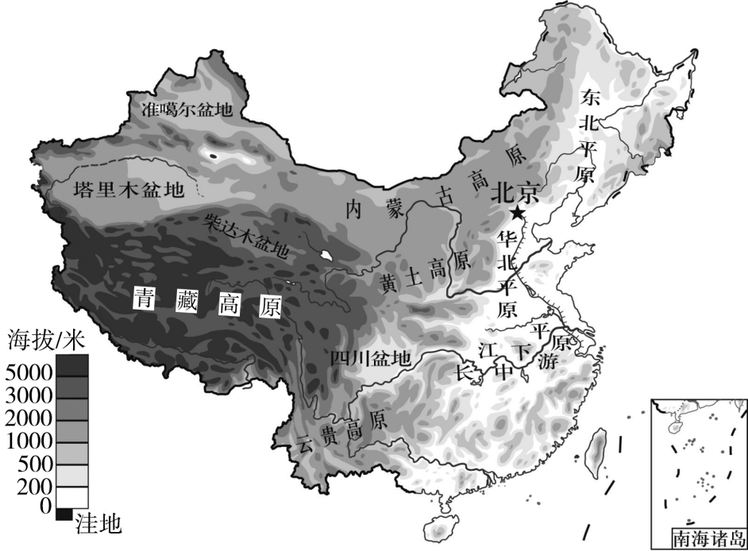
（1）运用中国地形图，从地形和地势两方面，简要归纳我国地形主要特征。
气候
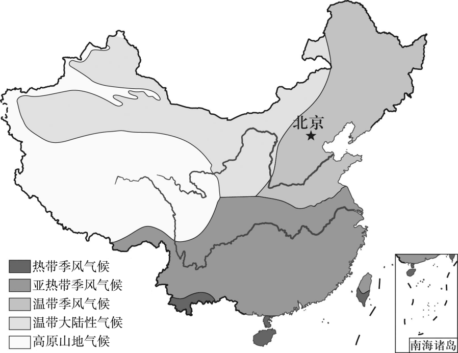
（2）运用中国主要气候类型图，从类型和分布等角度，简要归纳我国气候主要特征。
河流
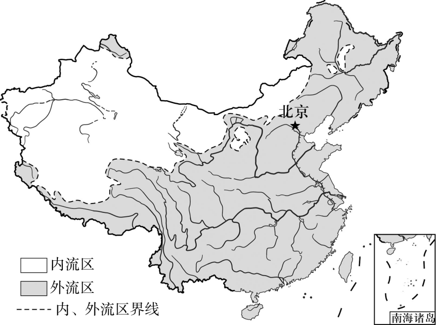
（3）运用中国水系图，从河流类型和数量等方面，简要归纳我国河流分布特征。
人口
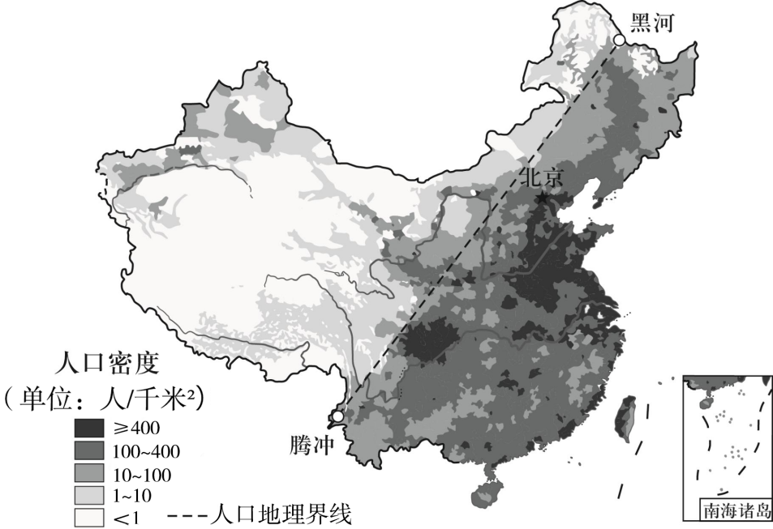
（4）运用中国人口密度图，找到我国人口地理界线，描述我国人口分布特征。
（5）在地形、气候、河流要素中任选其一，举例说明其对我们生产和生活的影响。
【答案】（1）地形类型复杂多样、地势西高东低，呈三级阶梯状分布
（2）气候复杂多样，季风气候显著
（3）从河流类型看，东部为外流河，西部多内流河；从河流数量看，东部河流数量众多，西部河流数量较少。
（4）以黑河 — 腾冲线为界，东南部人口多，该线西北部人口少
（5）地形：山区地形崎岖，交通不便，不利于大规模的农业生产，平原地形平坦开阔，土壤肥沃，水源充足，有利于发展种植业，交通建设也较为便利；气候：北方以旱地为主，主要粮食作物是小麦，玉米，南方以水田为主，主要粮食作物以水稻为主，西北等地以畜牧业为主，绿洲农业为辅。另外，在交通方面，“南船北车”也充分体现了气候对人们生活的影响；河流：提供水源，保障了居民的基本生活需求，便利交通，降低了运输成本，促进了区域之间的经济交流，还有一定的调节气候的作用。
【解析】
【分析】本大题以中国地形图、中国主要气候类型图、中国水系图、中国人口密度图为材料，涉及我国地形主要特征、我国气候的主要特征、我国河流分布特征等相关内容，考查学生对相关知识的掌握程度，培养学生综合思维能力。
【小问1详解】
由图可知，我国拥有山地、高原、盆地、平原、丘陵等多种地形，其中山地和高原面积占比最大，其次为盆地和丘陵，平原面积较小；以青藏高原为主体，以昆仑山脉、祁连山脉、横断山脉为界，是第一级阶梯；以高原和盆地为主，东缘以大兴安岭 — 太行山脉 — 巫山 — 雪峰山为界，为第二级阶梯；第三级阶梯以平原和丘陵为主，向东延伸至大陆架，故我国地形主要特征为地形类型复杂多样、地势西高东低，呈三级阶梯状分布。
【小问2详解】
根据材料可知，我国地域辽阔，南北跨度大，有热带、亚热带和温带等多种温度带，有温带季风气候 、亚热带季风气候 、热带季风气候、温带大陆性气候、高原山地气候，且海陆位置差异大，气候复杂多样；且我国位于世界最大的大陆--亚欧大陆东部、世界最大的大洋--太平洋西岸，由于海陆热力性质的差异，形成了典型的季风气候， 我国的东部地区为世界上典型的季风气候区，因此我国气候特点为气候复杂多样，季风气候显著。
【小问3详解】
我国河流类型丰富，既有外流河，又有内流河。外流河是指最终流入海洋的河流，内流河是指最终未流入海洋的河流。从分布上看，外流河主要分布在东部季风区，这里降水丰富，受夏季风影响明显，河流有充足的水源补给；内流河主要分布在西北内陆地区，该地区气候干旱，降水稀少，河流主要依靠高山冰雪融水和山地降水补给；从数量上看，我国东部地区河流数量众多。东部地区地形以平原和丘陵为主，地势起伏较小，降水丰富且集中，有利于河流的发育和形成。而西部地区河流数量相对较少，主要是因为西部地区以高原、山地为主，地形起伏较大，且气候干旱，降水稀少，河流的形成和发育受到限制。因此我国河流分布特征为东部为外流河且河流数量众多；西部多内流河，河流数量较少。
【小问4详解】
我国人口地理界线为黑河 — 腾冲线，这条线北起黑龙江省黑河市，南至云南省腾冲市，是我国人口分布差异的宏观分界线，该线东南半壁以平原、丘陵和低山为主，气候湿润，水资源丰富，农业基础好，经济发达，城市化水平高，交通便利，是我国人口和经济的核心集聚区，西北半壁以高原、山地和盆地为主，气候干旱或高寒，生态环境脆弱，水资源匮乏，经济发展相对滞后，人口主要集中在绿洲、河谷或资源富集区，因此我国人口分布特征为东南密集、西北稀疏。
【小问5详解】
以地形为例，地形对我们生产和生活有着重要影响。山区地形崎岖，交通不便，不利于大规模的农业生产，但适宜发展林业、畜牧业和旅游业；平原地形平坦开阔，土壤肥沃，水源充足，有利于发展种植业，交通建设也较为便利；以气候为例，我国气候复杂多样，使得动植物资源丰富，有利于农业生产的多种经营，各种农作物都有生长的气候环境。北方以旱地为主，主要粮食作物是小麦，玉米，南方以水田为主，主要粮食作物以水稻为主，西北等地以畜牧业为主，绿洲农业为辅。农业得到综合发展，社会生活丰富多彩。另外，在交通方面，“南船北车”也充分体现了气候对人们生活的影响；以河流为例，河流是重要的水资源来源，为人们的日常生活、工业生产和农业灌溉提供必要的水，河流可以作为天然的航道，为货物运输和人员往来提供便利，河流具有一定的调节气候的作用。大面积的水面可以吸收和储存热量，在一定程度上缓解了周边地区的温度变化，使气候更加温和。
22. 春节期间，八年级的小慧和小悠从北京出发去东南亚旅行。小慧一家前往泰国，小悠一家前往印度尼西亚，两人从地理视角记录了这次旅行。如图为东南亚地图及芭提雅气温曲线和降水量柱状图。阅读图文资料，回答下列问题。
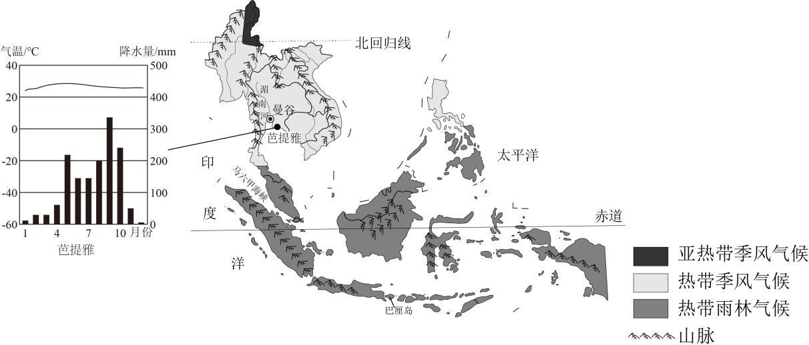
（1）根据出游行程，补全旅行日记。
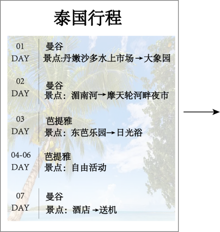 | 小慧旅行日记（摘录） 第1天：水上市场载着蔬果小吃的船在水道里穿梭，我品尝了菠萝饭、椰汁芒果饭，真是美味啊！因为这里①____气候显著，热带水果丰富。 第2天：今天我们乘船游览曼谷。穿行在静水流深的湄南河上，我不由的想到它发源于中南半岛北部的②____（地形类型），自③____向④____汇入太平洋，真是惬意的一天啊！ 第3天：春节期间，当地正值⑤____（早/雨）季，我们在芭提雅的海滩上尽情享受阳光，听着海浪的声音，感受海风拂面。 |
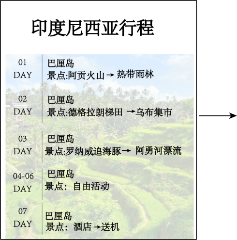 | 小悠旅行日记（摘录） 第1天：今天我们来到了热带雨林，看到了很多稀奇古怪的动植物，真是大开眼界啊！看来在⑥____（特殊纬线）附近的气候真是又湿又热啊！我们还看到了火山，知道了板块交界地带的地壳活动比较⑦____（活跃/稳定）。 第2天：今天看到的德格拉朗梯田种植的农作物竟然是⑧____，与我国南方地区的主要粮食作物一样，难怪今晚的主食是米饭。 第3天：今天 漂流真刺激啊！这是当地人们充分利用降水丰富，地势起伏大，河流流速⑨____的特点，开发的旅游项目。 漂流真刺激啊！这是当地人们充分利用降水丰富，地势起伏大，河流流速⑨____的特点，开发的旅游项目。 |
（2）请你为去东南亚旅行的人提出合理建议，并说明理由。（提示：如出行方式、携带服饰、物品等）
【答案】（1） ①. 热带季风 ②. 山地 ③. 北 ④. 南 ⑤. 旱 ⑥. 赤道 ⑦. 活跃 ⑧. 水稻 ⑨. 快
（2）出行方式可选择飞机，因为距离远，飞机速度快能节省时间，携带轻薄透气的夏季衣物，因为地处热带，终年高温，携带防晒用品和雨具，因为太阳辐射强且降水丰富。
【解析】
【分析】本大题通过小慧和小悠的东南亚旅行经历，以旅行日记和行程为载体，涉及东南亚的气候、地形、河流、农业等基础知识，考查学生的读图能力以及根据所学知识解决问题的能力。
【小问1详解】
泰国大部分地区是热带季风气候，这种气候有明显的旱、雨两季，雨季降水丰富，干季相对少雨，充足的热量和降水让当地水果生长条件优越，水果种类丰富。湄南河发源于山地地区，山地地势起伏大，河流从高处流向低处，为湄南河提供了水流动力。从河流整体走向看，湄南河是由北向南流，最终注入海洋，这和其发源地及流经区域的地势有关。泰国的热带季风气候分旱季和雨季，春节期间处于旱季，降水较少，气候相对干燥。巴厘岛靠近赤道，赤道附近地区接受太阳辐射多，气温高，形成了热带雨林气候，终年高温多雨。巴厘岛位于板块交界地带，板块之间相互碰撞、挤压，地壳运动频繁，所以地壳活动活跃，多火山等地质活动。东南亚气候湿热，水热条件适合水稻生长，水稻是当地主要粮食作物，德格拉朗梯田也以种植水稻为主。巴厘岛降水多，地形起伏大，河流落差大，水流速度就快，这种水流特点适合开发漂流等旅游项目。
【小问2详解】
出行方式：选择飞机。中国离东南亚有一定距离，飞机速度快，能快速到达目的地，节省路途时间，让旅行更高效。携带服饰：带轻薄透气的夏季衣物。东南亚在热带，全年温度高，这类衣物穿着凉爽，能适应炎热天气。携带物品：带上防晒用品和雨具。东南亚阳光强烈，防晒用品可防止被晒伤；同时降水较多且不稳定，雨具能避免被雨淋湿。
23. 北京市房山区某中学通过设计名片的方式认识国家。请你根据以下资料为澳大利亚设计国家名片。图1为澳大利亚位置和地形图，图2为澳大利亚气候类型图，图3为澳大利亚牧羊带的分布图，图4为澳大利亚矿产资源图。阅读图文资料，回答下列问题。
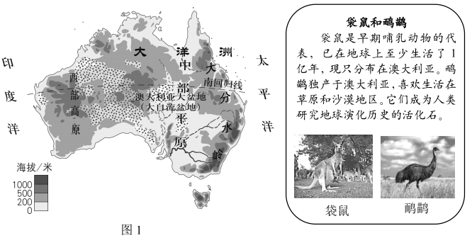
（1）读图1可知，澳大利亚是____洲面积最大的国家，位于南半球，地处太平洋和____洋之间。长期被海洋包围，与其他大陆阻隔，保留下许多古老而独特的动植物。
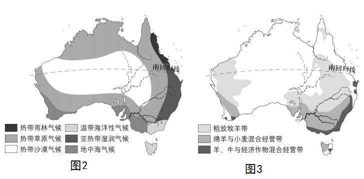
（2）读图1和图2可知，澳大利亚中部以____（地形类型）、盆地为主。因东部山脉的阻挡降水少，形成了典型的热带草原气候和____气候。虽然地表河流少，但中东部地区地下水丰富，满足了畜牧业的用水，养羊业在世界上处于领先地位。读图3可知，澳大利亚的牧羊带主要分布在____地区。
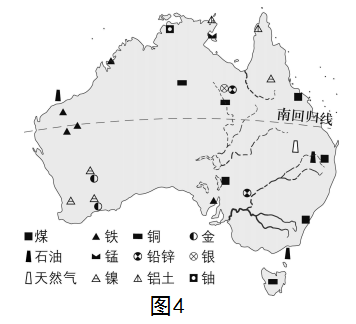
（3）读图4可知，澳大利亚蕴藏着丰富的____、铁、铜、铝土等多种矿产资源。铁矿主要分布在____沿海地区，便于对外运输，利于出口。2023年中国进口的铁矿中，澳大利亚占比约为63%，主要通过____（单选）方式运往中国。
A．铁路运输 B．公路运输 C．航空运输 D．水路运输
（4）请你综合以上内容为澳大利亚设计国家名片。
【答案】（1） ①. 大洋 ②. 印度
（2） ①. 平原 ②. 热带沙漠 ③. 东部和西部
（3） ① 煤 ②. 西部 ③. D
（4）
【解析】
【分析】本大题以澳大利亚位置和地形图、澳大利亚气候类型图、澳大利亚牧羊带的分布图、澳大利亚矿产资源图为材料，共设置四道小题，涉及澳大利亚的地理位置、澳大利亚的地形、澳大利亚的气候、澳大利亚的农牧业等相关内容，考查学生对相关知识点的掌握程度。
【小问1详解】
澳大利亚是大洋洲面积最大的国家，位于南半球，地处太平洋和印度洋之间。长期与其他大陆阻隔，所以保留下许多古老而独特的动植物。
【小问2详解】
澳大利亚中部以平原、盆地为主，从图1的地形图中可以看出中部海拔较低且较为平坦，是平原地形。因东部大分水岭山脉的阻挡，来自太平洋的水汽难以深入，降水少，形成了典型的热带草原气候和热带沙漠气候，结合图2气候类型图可得出。从图3澳大利亚牧羊带的分布图可以看出，牧羊带主要分布在东部和西部地区。
【小问3详解】
从图4澳大利亚矿产资源图可知，澳大利亚蕴藏着丰富的煤、铁、铜、铝土等多种矿产资源。铁矿主要分布在西部沿海地区，这样的分布便于通过海洋运输对外输出。澳大利亚与中国距离较远，大量的铁矿运输适合采用水路运输，运量大，运费低；中国和澳大利亚之间没有公路和铁路连接，航空运输运费高，不适合大量铁矿的运输，故选D。
【小问4详解】
设计的澳大利亚国家名片符合该国的特色即可，。
24. 水土流失影响地理环境。学生通过模拟实验探究影响水土流失的自然地理因素。表1为水土流失模拟实验记录单，据此完成下列问题。
（1）补全水土流失模拟实验记录单。
水土流失模拟实验记录单
实验名称 | 探究影响水土流失的自然地理因素 |
实验材料 | 空水瓶、计时器、量角器、洒水壶、清水、土壤等 |
实验过程 对照组 影响因素及现象 | A组 | B组 | 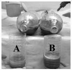 | 坡度 | 一致 | 一致 | 降水强度 | 小 | 大 | 水土流失情况 | ①____ | ②____ | 对照组 影响因素及现象 | A组 | B组 | 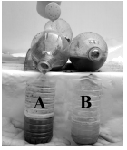 | 坡度 | ③____（大/小） | ④____（大/小） | 降水强度 | 一致 | 一致 | 水土流失情况 | 水量大、较浑浊，水土流失严重 | 水量小、较清澈，水土流失轻微 |
|
（2）举例说出影响水土流失的其他自然地理因素。
（3）根据实验和所学知识，请你举例说出防治水土流失的具体措施。
【答案】（1） ①. 水量少、较为清澈，水土流失轻微 ②. 水量多、较为浑浊，水土流失严重 ③. 大 ④. 小
（2）植被覆盖率、土壤类型等。
（3）植树造林、修建梯田、增加植被覆盖、修建水平沟、合理施肥等。
【解析】
【分析】本题以水土流失模拟实验记录单为材料，涉及探究影响水土流失的自然地理因素、防治水土流失的具体措施等知识点，考查学生的读图能力以及根据所学知识解决问题的能力，培养学生地理核心素养。
【小问1详解】
在相同的坡度条件下，降水强度越大，水土流失风险越高，故①为水量少、较为清澈，水土流失轻微，②为水量多、较为浑浊，水土流失严重；在降水强度一致时，坡度大，水量大、较浑浊，水土流失严重，而坡度小时，水量小、较清澈，水土流失轻微，故③为大，④为小。
【小问2详解】
水土流失的因素包括降雨量、植被覆盖率、地形坡度、土壤类型等，它们的改变会影响水的流速和携带土壤颗粒能力。
【小问3详解】
为防治水土流失，人类可以采取多种措施。例如：植树造林增加地面植被覆盖，修建梯田减少坡地冲刷，修建水平沟的沟渠、合理的水土保持措施等。